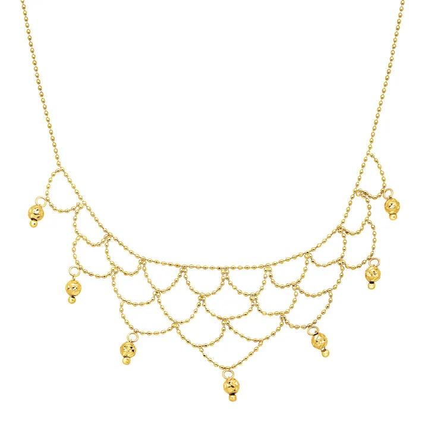

白銀：平民的貴金屬
白銀是「窮人的黃金」——它比黃金便宜百倍，卻有自己的傳奇與功能。

核心定義
白銀（silver，Ag）是第 47 號元素——密度 10.5 g/cm³、熔點 962°C、導電導熱性所有金屬之最。它比黃金便宜約百倍，卻是「功能最強」的貴金屬：電子、醫療、太陽能都要用銀。
925 純銀（Sterling silver）：92.5% 銀＋7.5% 銅——提高硬度的標準合金（純銀太軟）。全球銀飾以 925 為主流——「925」三個字，是銀飾的品質印記。
特徵與分類
| 特性 | 數值 | 意義 |
|---|---|---|
| 密度 | 10.5 g/cm³ | 黃金一半 |
| 導電性 | 所有金屬最佳 | 工業核心 |
| 反射率 | 極高 | 鏡面光澤 |
| 熔點 | 962°C | 易加工 |
| 價格 | 黃金約1/100 | 親民 |
白銀的「鏡面光澤」是所有金屬中最亮之一——拋光銀能反射 95% 以上的可見光。它的缺點：易氧化變黑（硫化）——銀飾會「變黑」，是化學反應不是品質問題。
科學原理
白銀的變黑：空氣中的硫化氫（H₂S）與銀反應生成硫化銀（Ag₂S）——黑色薄膜。這是化學反應，可逆（拋光或化學還原可恢復）。所以銀飾需要定期保養——「銀會黑」是它的天性。
白銀的工業價值：導電性最優——電子、太陽能電池、醫療抗菌都需要銀。全球白銀需求中工業占比近半——它的價格受「工業景氣＋投資需求」雙重驅動。
鑑定與鑑別方法
- 看印記：925/999
- 掂密度：10.5 壓手
- 冰塊測試：銀導熱快（冰快速融化）
- 硝酸測試：白銀反應特徵
- 專業檢測：X射線螢光（XRF）
市場行情與保養建議
行情：白銀價格約為黃金的 1/80–1/100——「窮人的避險」＋「工業金屬」雙重身分。投資管道：銀條、銀幣、ETF。白銀波動常大於黃金（工業需求敏感）。
選購：銀飾看「925 印記＋設計」；投資銀條銀幣看溢價與回購。白銀保值但波動大——適合「長期持有」與「工業週期」的玩家。
常見誤區
銀氧化變黑（硫化銀）是正常化學——真銀也變黑。變黑反而是「真銀」的證明（多數仿品不氧化）。
純銀太軟，飾品用 925（92.5% 銀＋銅）——「925 純銀」是全球標準。100% 銀（999）多用於銀條銀幣。
冷知識
所有金屬中銀的導電性最強——你手機裡的電路，用的就是銀（或含銀導電膠）。
銀離子能破壞細菌細胞膜——銀離子敷料用於傷口治療，「銀的魔法」從古希臘用到現代醫院。
反直覺觀點
按工業消耗速度，白銀的地上存量（可回收）少於黃金——白銀是「工業剛需＋有限存量」的組合。便宜，不代表不缺。
銀氧化變黑證明它是銀（仿品不氧化）——黑掉的銀飾，是身分證。拋光後，又煥然一新。